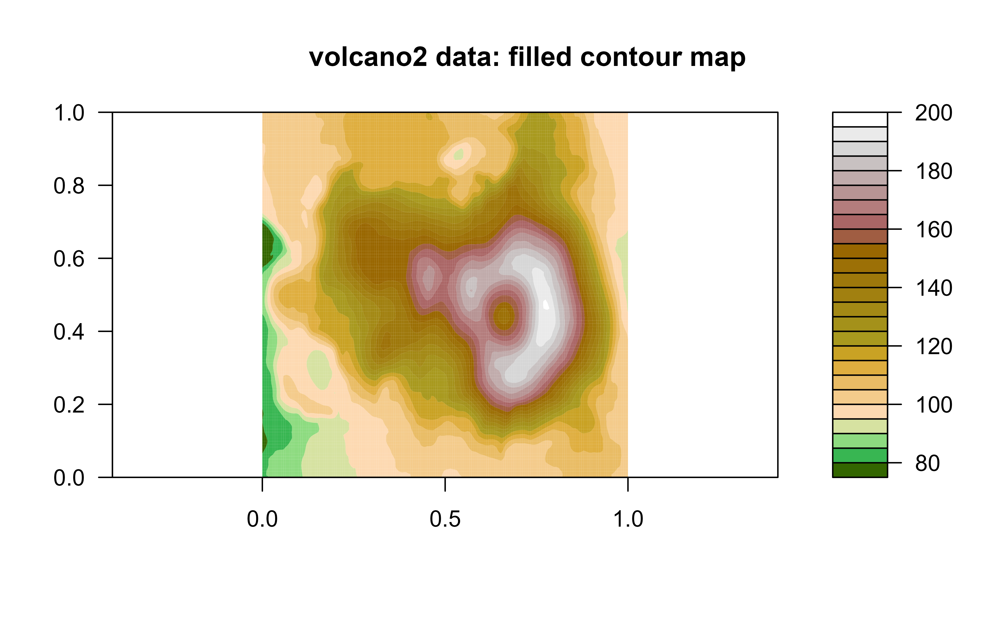
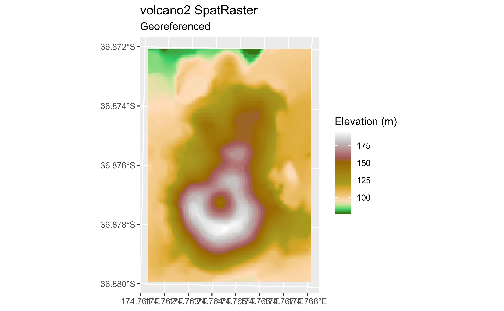

Probably you already know the volcano dataset. This dataset provides updated information of Maungawhau (Mt. Eden) from Toitu Te Whenua Land Information New Zealand, the Government's agency that provides free online access to New Zealand’s most up-to-date land and seabed data.
Source
DEM for LiDAR data from the Auckland region captured in 2013. The original data has been downsampled to a resolution of 5m due to disk space constrains.
Data License: CC BY 4.0.
Note
Information needed for regenerating the original SpatRaster file:
resolution:
c(5, 5)extent:
1756969, 1757579, 5917003, 5917873(xmin, xmax, ymin, ymax)coord. ref. : NZGD2000 / New Zealand Transverse Mercator 2000 (
EPSG:2193)
See also
Other datasets:
cross_blended_hypsometric_tints_db,
grass_db,
hypsometric_tints_db,
princess_db
Examples
data("volcano2")
filled.contour(volcano2, color.palette = hypso.colors, asp = 1)
title(main = "volcano2 data: filled contour map")

# Geo-tag
# Empty raster
volcano2_raster <- terra::rast(volcano2)
terra::crs(volcano2_raster) <- pull_crs(2193)
terra::ext(volcano2_raster) <- c(1756968, 1757576, 5917000, 5917872)
names(volcano2_raster) <- "volcano2"
library(ggplot2)
ggplot() +
geom_spatraster(data = volcano2_raster) +
scale_fill_hypso_c() +
labs(
title = "volcano2 SpatRaster",
subtitle = "Georeferenced",
fill = "Elevation (m)"
)
